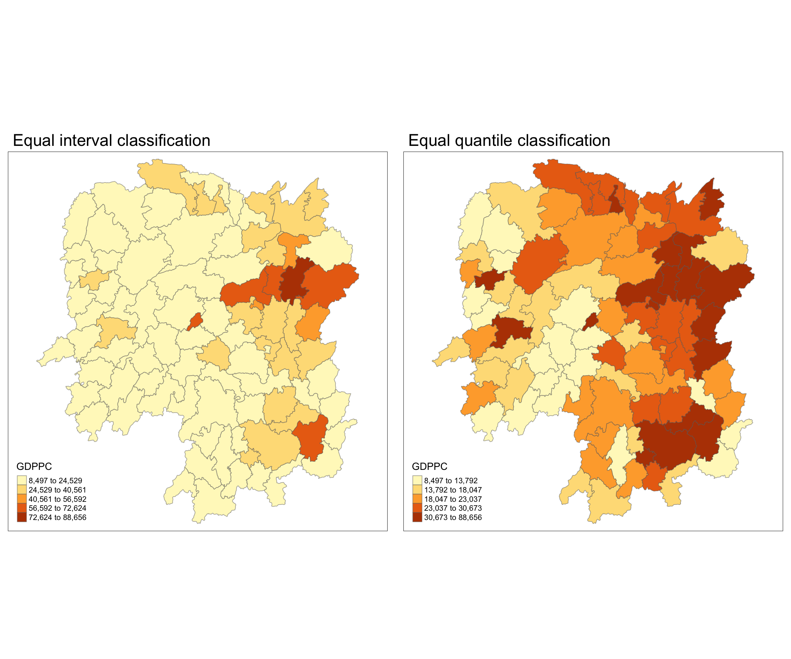

pacman::p_load(sf, spdep, tmap, tidyverse)Hands-on Exercise 06: Global/Local Measures of Spatial Autocorrelation
1. Overview
In this hands-on exercise, I will learn how to compute Global Measures of Spatial Autocorrelation (GMSA) and Local Measures of Spatial Autocorrelation (LMSA) by using spdep package.
1.1 What is Global Measures of Spatial Autocorrelation (GMSA)
Evaluate the overall degree of spatial dependence (autocorrelation) across the entire study area.
Moran’s I: A widely used global indicator that measures whether a variable is spatially clustered, dispersed, or randomly distributed.
I > 0: Clustered, observation tend to be similar.
I < 0: Dispersed, observations tend to be dissimilar.
approximately zero: observations are arranged randomly over space.
Geary’s C: Similar to Moran’s I but more sensitive to local differences.
C > 1: Dispersed, observations tend to be dissimilar.
C < 1: Clustered, observations tend to be similar.
C = 1: Observations are arranged randomly over space.
By the end of this hands-on exercise, I will be able to :
compute Global Spatial Autocorrelation (GSA) statistics by using appropriate functions of spdeppackage,
plot Moran scatterplot,
compute and plot spatial correlogram using appropriate function of spdep package.
provide statistically correct interpretation of GSA statistics.
1.2 What is Local Measures of Spatial Autocorrelation (LMSA)
Assess the degree of spatial autocorrelation at a local, rather than global, scale to identify clusters or outliers in specific areas.
Local Moran’s I: Measures how much a given location contributes to the overall Moran’s I, identifying local clusters and outliers.
Local cluster: Significant and positive if location i is associated with relatively high values of the surrounding locations.
Local outlier: Significant and negative if location i is associated with relatively low values in surrounding locations.
Getis-Ord Gi*:Measures local “hotspots” and “cold spots” where values are significantly higher or lower than expected.
Hot spot area: Significant and positive if location i is associated with relatively high values of the surrounding locations.
Cold spot area: Significant and negative if location i is associated with relatively low values in surrounding locations.
By the end of the hands-on, I will be able to :
compute Local Indicator of Spatial Association (LISA) statistics for detecting clusters and outliers by using appropriate functions spdep package;
compute Getis-Ord’s Gi-statistics for detecting hot spot or/and cold spot area by using appropriate functions of spdep package; and
to visualise the analysis output by using tmap package.
2. Getting Started
2.1 The Analytical Question
In spatial policy, one of the main development objective of the local government and planners is to ensure equal distribution of development in the province. Our task in this study, hence, is to apply appropriate spatial statistical methods to discover if development are even distributed geographically. If the answer is No. Then, our next question will be “is there sign of spatial clustering?”. And, if the answer for this question is yes, then our next question will be “where are these clusters?”
In this case study, we are interested to examine the spatial pattern of a selected development indicator (i.e. GDP per capita) of Hunan Provice, People Republic of China.
2.2 The Study Area and Data
Hunan province administrative boundary layer at county level. This is a geospatial data set in ESRI shapefile format.
Hunan_2012.csv: This csv file contains selected Hunan’s local development indicators in 2012.
2.3 Setting the Analytical Tools
sf is use for importing and handling geospatial data in R,
tidyverse is mainly use for wrangling attribute data in R,
spdep will be used to compute spatial weights, global and local spatial autocorrelation statistics, and
tmap will be used to prepare cartographic quality chropleth map.
To check if the packages have been installed in R and load the packages into the current R environment.
3. Load the Data into R Environment
3.1 Import shapefile
Using st_read() of sf package to import Hunan shapefile into R. It will be in sf object.
hunan_sf <- st_read(dsn = "data/geospatial",
layer = "Hunan")Reading layer `Hunan' from data source
`/Users/mingwei/Desktop/SMU/Y3S1/IS415/xXxPMWxXx/IS415-GAA/Hands-on_Ex/Hands-on_Ex06/data/geospatial'
using driver `ESRI Shapefile'
Simple feature collection with 88 features and 7 fields
Geometry type: POLYGON
Dimension: XY
Bounding box: xmin: 108.7831 ymin: 24.6342 xmax: 114.2544 ymax: 30.12812
Geodetic CRS: WGS 843.2 Import CSV File
Using read_csv() of readr package. The output is R data frame class.
hunan2012 <- read_csv("data/aspatial/Hunan_2012.csv")3.3 Performing Relational Join
Using left_join() of dplyr package to update the attribute table of hunan_sf with the attribute fields of hunan2012 dataframe.
hunan_sf <- left_join(hunan_sf,hunan2012) %>%
dplyr::select(1:4, 7, 15)3.4 Visualising Regional Development Indicator
To prepare a basemap and a choropleth map showing the distribution of GDPPC 2021 using qtm() of tmap package.
equal <- tm_shape(hunan_sf) +
tm_fill("GDPPC",
n = 5,
style = "equal") +
tm_borders(alpha = 0.5) +
tm_layout(main.title = "Equal interval classification")
quantile <- tm_shape(hunan_sf) +
tm_fill("GDPPC",
n = 5,
style = "quantile") +
tm_borders(alpha = 0.5) +
tm_layout(main.title = "Equal quantile classification")
tmap_arrange(equal,
quantile,
asp=1,
ncol=2)
4. Global Measures of Spatial Autocorrelation
This section, I will learn how to compute global spatial autocorrelation statistics and to perform spatial complete randomness test for global spatial autocorrelation.
4.1 Computing Contiguity Spatial Weights
Before we can compute the global spatial autocorrelation statistics, we need to construct a spatial weights of the study area. The spatial weights is used to define the neighbourhood relationships between the geographical units (i.e. county) in the study area.
In the code chunk below, poly2nb() of spdep package is used to compute contiguity weight matrices for the study area. This function builds a neighbours list based on regions with contiguous boundaries. If you look at the documentation you will see that you can pass a “queen” argument that takes TRUE or FALSE as options. If you do not specify this argument the default is set to TRUE, that is, if you don’t specify queen = FALSE this function will return a list of first order neighbours using the Queen criteria.
More specifically, the code chunk below is used to compute Queen contiguity weight matrix.
wm_q <- poly2nb(hunan_sf,
queen=TRUE)
summary(wm_q)Neighbour list object:
Number of regions: 88
Number of nonzero links: 448
Percentage nonzero weights: 5.785124
Average number of links: 5.090909
Link number distribution:
1 2 3 4 5 6 7 8 9 11
2 2 12 16 24 14 11 4 2 1
2 least connected regions:
30 65 with 1 link
1 most connected region:
85 with 11 linksThe summary report above shows that there are 88 area units in Hunan. The most connected area unit(85) has 11 neighbours. There are two area units(30,65) with only one neighbours.
4.2 Row-Standardised Weights Matrix
Next, we need to assign weights to each neighboring polygon. In our case, each neighboring polygon will be assigned equal weight (style=“W”). This is accomplished by assigning the fraction 1/(#ofneighbors) to each neighboring county then summing the weighted income values. While this is the most intuitive way to summaries the neighbors’ values it has one drawback in that polygons along the edges of the study area will base their lagged values on fewer polygons thus potentially over- or under-estimating the true nature of the spatial autocorrelation in the data. For this example, we’ll stick with the style=“W” option for simplicity’s sake but note that other more robust options are available, notably style=“B”.
rswm_q <- nb2listw(wm_q,
style="W",
zero.policy = TRUE)
rswm_qCharacteristics of weights list object:
Neighbour list object:
Number of regions: 88
Number of nonzero links: 448
Percentage nonzero weights: 5.785124
Average number of links: 5.090909
Weights style: W
Weights constants summary:
n nn S0 S1 S2
W 88 7744 88 37.86334 365.9147class(wm_q)[1] "nb"
Note
The input of
nb2listw()must be an object of class nb. The syntax of the function has two major arguments, namely style and zero.poly.style can take values “W”, “B”, “C”, “U”, “minmax” and “S”. B is the basic binary coding, W is row standardised (sums over all links to n), C is globally standardised (sums over all links to n), U is equal to C divided by the number of neighbours (sums over all links to unity), while S is the variance-stabilizing coding scheme proposed by Tiefelsdorf et al. 1999, p. 167-168 (sums over all links to n).
If zero policy is set to TRUE, weights vectors of zero length are inserted for regions without neighbour in the neighbours list. These will in turn generate lag values of zero, equivalent to the sum of products of the zero row t(rep(0, length=length(neighbours))) %*% x, for arbitrary numerical vector x of length length(neighbours). The spatially lagged value of x for the zero-neighbour region will then be zero, which may (or may not) be a sensible choice.
5. Global Measures of Spatial Autocorrelation: Moran’s I
In this section, I will learn how to perform Moran’s I statistics testing by using moran.test() of spdep.
5.1 Maron’s I Test
Using moran.test() of spdep.
moran.test(hunan_sf$GDPPC,
listw=rswm_q,
zero.policy = TRUE,
na.action=na.omit)
Moran I test under randomisation
data: hunan_sf$GDPPC
weights: rswm_q
Moran I statistic standard deviate = 4.7351, p-value = 1.095e-06
alternative hypothesis: greater
sample estimates:
Moran I statistic Expectation Variance
0.300749970 -0.011494253 0.004348351
Note
- I = 0.3, indicates positive spatial autocorrelation, meaning that areas with similar values of GDP per capita (either high or low) are geographically clustered together.